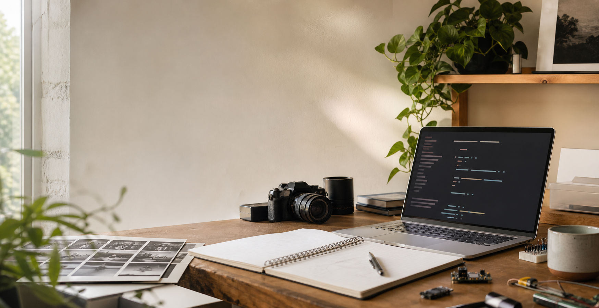

App
Project Name
A concise description of what the app does, who it is for, and why it exists.
Open
Public notebook and project shelf
A home for the things I make, write, notice, test, photograph, and keep returning to.
About this place
This space is meant to hold finished work and work in progress: useful apps, research trails, short notes, longer essays, field photos, experiments, and the occasional odd idea that needs a URL before it needs a business plan.
Projects
App
A concise description of what the app does, who it is for, and why it exists.
OpenResearch
Collected notes, references, questions, and working conclusions around a topic.
Read notesExperiment
A sandbox for testing an interaction, technical idea, data view, or creative tool.
ViewWriting
A place for arguments, observations, process notes, and thoughts that are easier to improve in public.
Photos
Now